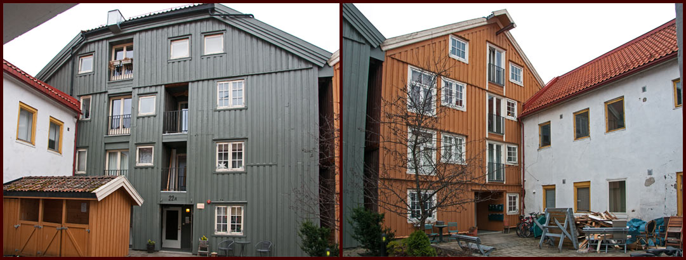

Nygata
Nygata er en avstikker fra Nedre Bakklandet, og starter ved Nedre Bakklandet 22, og ender ved nr. 56. Nygata ligger nærmest Nidelva av de to. Navnet er gammelt, og offisielt oppkalt i 1878, etter veiløpet, som ble betraktet som nyere enn Bakklandet. (Kilde: Trondheim Byleksikon)

Nygata 2007 (Foto: EspeN-ikon ©)
Nygata 1
Nygata 1 / Nedre Bakklandet 24. Bakermester Ole Johnsens gård i mars 1964. Huset brant ned i 1974.(Foto: Ukjent) 1964
Nygata 1c til venstre, 1b til høyre (Foto: EspeN-ikon ©) Mars 2012
Nygata 2
Nygata 2a (Foto: EspeN-ikon ©) Mars 2012
Nygata 2b "omslutter 2a, og har inngang i nummer 4. Den beige fasaden mot gata, og den oker bryggen mot elva er begge Nygata 2b (Foto: EspeN-ikon ©) Mars 2012
Brygge på Bakklandet i 1966. Restene av Nygata 2, som raste ut på grunn av pålesvikt. Ukjent fotograf. Kilde: Trondheim Byarkiv
Nygata 3
Nygata 3 (Foto: EspeN-ikon ©) Mars 2012
Nygata 4
Nygata 4 fasade. Adressen har også en bryggedel mot elva. (Foto: EspeN-ikon ©) Mars 2012
Nygata 5
Nygata 5 (Foto: EspeN-ikon ©) Mars 2012
Nygata 6
Nygata 6 (Foto: EspeN-ikon ©) Mars 2012
Nygata 6, ca 1981 Byantikvarens negativsamling. Kilde: Trondheim Byarkiv

Nygata 6, ca 1981 Byantikvarens negativsamling. Kilde: Trondheim Byarkiv
På skiltet står det Magnus Skaugstad - Maskiner - Jernvarer
Nygata 7
Nygata 7 (Foto: EspeN-ikon ©) Mars 2012
Nygata 8
Nygata 8 (Foto: EspeN-ikon ©) Mars 2012
Nygata 9
Dette var tidligere Nygata 13...........Nygata 11.........................................og Nygata 9 (Foto: EspeN-ikon ©) Mars 2012
Nygata 9 eksisterer ikke lenger som adresse. Se Nygata 11 ->11
Nygata 10
Nygata 10a - Sommer 2011 (Foto: Solvor Leistad )
Nygata 10a er det hvite huset mot gata, og 10b er den røde bryggedelen mot Nidelva (Foto: EspeN-ikon ©) Mars 2012
Fra Byantikvarens negativsamling. Fotograf: KJA. År: 1978, høst. Kilde: Trondheim Byarkiv
På skiltet står det: MASKINSERVICE Langlie & Lundquist
Fra Byantikvarens negativsamling. Fotograf: KJA. År: 1978, høst. Kilde: Trondheim Byarkiv
Nygata 11
Nygata 11 er adressen for indre kvartal, som her er merket med blått. (Kart fra Tr.h. kommune karttjenester) Mars 2012
Nygata 9, 11 og 13 er slått sammen til èn adresse. Sammen med Nedre Bakklandet 34 og 36 danner det i dag Nygata 11, og betegnes som Indre Kvartal.
Nygata 12

Nygata 12 er det grå huset mot veien, og den grønne bryggen mot elva. (Foto: EspeN-ikon ©) Mars 2012
Nygata 13
Nygata 13, 11 og 9.(Foto: EspeN-ikon ©) Mars 2012
Nygata 13 eksisterer ikke lenger som adresse. Se Nygata 11 ->11
Nygata 14
Nygata 14 er det røde "Kortmann-huset med den tilhørende bryggen i bakkant mot elva..(Foto: EspeN-ikon ©) Mars 2012

Til venstre Nygata 15, til høyre Nygata 14. Fra Byantikvarens negativsamling. Fotograf: Ukent. År: Trolig 1981, høst. Kilde: Trondheim Byarkiv
Tekst av Sverre Lilleeng:
Like før forrige hundreårsskifte kom en innflytter fra Nederland til Trondheim. Etter en tids opphold i byen startet han opp en liten bedrift i en brygge i Bakklandets Nygate (nå Nygata). Denne innflytteren, L.A. Kortman, hadde merket seg at det var stor etterspørsel etter vaskemidler, og han konsentrerte seg i begynnelsen om framstilling av soda.
Omsetningen ble etter hvert så stor at bedriften måtte utvide produksjons- arealet med en brygge nr. 2. Huset framfor bryggene, Nygata nr. 14, ble også tillagt bedriften som kombinert bolig og kontorlokale.
På den andre siden av gata lå en annen velrenommert bedrift, Bakklandets Støperi og mekaniske Verksted. Dette verkstedet var arbeidsplass til mange bakklandsbeboere, og virksomheten spente fra allslags mekanisk reparasjonsarbeid til produksjon av blant annet kirkeklokker. Det var kanskje som leverandør av sine særs fint avstemte kirkeklokker verkstedet ble mest kjent. Dessverre ble denne bedriften, som ga levebrød til godt over 100 personer, nødt til å instille sin allsidige virksomhet i 1926. Da gikk Handelsbankens konkurs, og det rev grunnen unna den veldrevne arbeids- plassen.
Kortmanns fabrikker
Kortmans fabrikker, som på dette tidspunkt hadde utviklet stadig nye produkter, treng- te mer plass og kjøpte bygningene til det nedlagte mekaniske verkstedet og bygde dem om til sitt formål. I tillegg kjøpte fabrikken et par bolighus med fasader mot Nedre Bakklandet. I et av de husene bodde skøytekongen Hjalmar Andersen en tid, mens han jobbet som sjåfør for Kortman. Og her var det at Hjallis, som allerede var blitt en fetert person, en gang fikk besøk av en skoleklasse sørfra, som ville se premiesamlingen til sin store helt. Men leiligheten til Hjallis med familie var så liten og trang at han måtte slippe elevene inn gruppevis Blant annet vaskepulver, skosverte og eddik ble etter hvert en del av produksjonen ved Kortmans fabrikker. Særlig høstet vaskepulveret stor anerkjennelse som et kvalitetsprodukt. Likevel ble nok fabrikken etter hvert mest kjent for stearinlysene, og da særlig juletrelysene, som ble spredt landet rundt i sine pappesker påtrykt den hilsende flosshattmannen.
Juletrelys
I mellomkrigsårene var nettopp den nyinnkjøpte pakken med juletrelys fra Kortman et startsignal for selve julehøytiden. Særlig for ungene var det stor stas å sette de fargeglade nylysene i klypene, etter at stumpene fra året før var fjernet. Og disse lysstumpene kunne brukes til litt av hvert, blant annet til å vokse skiene med. Riktig avansert var det å smelte sammen stearinlys og gamle grammofonplater. Det ble en skismurning som ga maksimal glid på allslags føre. At den samme smurningen ga null feste i motbakke, betød mindre, all den stund det viktigste var å suse utfor etter mønster av Trysil-Knut. Mange minnes nok ennå med vemod sin barndoms jul med de levende tente lys på juletreet og den særegne blandingslukten av granbar og stearin, og kan ha problemer med å godta de livløse elektriske etterligningene.Etter krigen ble juletrelys av stearin mer og mer fortrengt av elektriske lys, noe som sikkert forebygget mange branner i jula. Men fabrikken økte i stedet produksjonen av større lys til å sette i stake. Omsetningen ble imidlertid dårligere og dårligere, og mot slutten av 1960-årene fant daværende driftsleder Balstad ingen mulighet til å opprettholde produksjonen i Nygata. Han flyttet til Asker, hvor han startet opp på nytt under firmanavnet Balstad lysfabrikk.
Hattmannen
Så skulle vi tro at nå var eventyret ute for den tradisjonsrike fabrikken med den karakteristiske hattmannen som varemerke. Riktig nok ble det fra Nygata enda noen år solgt lys, som var levert fra Balstads lysfabrikk i Asker. Og det gamle firmamerket var fremdeles å se på veggen til nr.14. Men bedriftens status var sterkt redusert. Heldigvis var det et ektepar som så mulighetene til å gjenopplive det gamle firmanavnet, og som fikk sikret seg retten til å bruke mannen med hatten som varemerke. Ekteparet Søyseth begynte forsiktig. De startet opp i et lite lokale på Øvre Bakklandet, hvor skiltet med teksten Kortmans Lysutsalg og den blide hattmannen vekket varme minner hos folk som hadde opplevd Kortman-fabrikkens storhetstid. Mens det nye firmaet til å begynne med tok inn lys fra Balstad for salg, begynte det litt etter litt å produsere lysene selv. Snart ble lokalet på Bakklandet for lite, og firmaet flyttet til større lokaler i Nedre Møllenbergs gate. I dag holder det til i to hus der. Og nå markeres det klart og tydelig at firmaet ikke lenger bare er et lysutsalg, men også fullt og helt selvhjulpen produsent. Kortmans Lysfabrik AS står det å lese over vinduene til det ene av husene. Og her lages det lys i alle farger og et utall av fasonger, som leveres til salgslokalet i huset ved siden av. Og nå virker det som «Nye Kortman» riktig er i ferd med å vokse til gamle høyder. Lysfabrikken har nemlig sikret seg et nedlagt småbruk i Åsen i Nord-Tøndelag, og her har den lagt opp til virkelig stordrift. Herfra leveres lys til fjern og nær. Og i Åsen har firmaet ved siden av lysproduksjonen også startet opp bakeridrift. Derfor kan lysutsalgene både i Nedre Møllenberg gate i Trondheim og i Åsen i Nord-Trøndelag også tilby nybakte kaker i sitt sortiment.
Men på veggen til den nyoppussede Nygata 14 løfter den blide kortmannen galant på flosshatten, og minner oss om at det var her det begynte.
Kilde: Byavisa / Byhistorie
Nygata 15
Nygata 15, er murgården med den vakre fargen.... Er en selvstendig enhet, i "Indre kvartal".(Foto: EspeN-ikon ©) Mars 2012
Nygata 16
Nygata 16, er det grå huset i forkant (16a) og den røde bryggen i bakkant (16B).(Foto: EspeN-ikon ©) Mars 2012
Nygata 17
Nygata 17 (Foto: EspeN-ikon ©) Mars 2012
Nygata 18
Nygata 18 (Foto: EspeN-ikon ©) Mars 2012
Fra Byantikvarens negativsamling. Fotograf: Ukjent. År: ca 1981, høst. Kilde: Trondheim Byarkiv
Nygata 19
Nygata 19 (Foto: EspeN-ikon ©) Mars 2012

Bakklandet Pikeskole sett fra Bakgården (Foto: Schrøder) Kilde: Trondheim Byarkiv
Bakklandet Pikeskole. Opprinnelig Bakklandets Friskole, opprettet 1778 etter initiativ av biskop Marcus Frederik Bang. I 1847 brant det gamle skolelokalet ned. I 1850 ble det nye skolebygget i stein ferdigstilt, lokalisert mellom Nygata og Nedre Bakklandet. Det ble ren pikeskole da guttene ble overført til Gråmølla i 1866. Bakklandet Pikeskole ble nedlagt i 1898, da elevene - sammen med guttene fra Gråmølla - ble overført til den nybygde Bispehaugen skole. (Kilde: Trondheim Byarkiv)
Nygata 20
Nygata 20 (Foto: EspeN-ikon ©) Mars 2012
Porten i Nygata 20 fører inn til bakgården, og der finner vi Nygata 22a og b. Se Nygata 22 -> 22
Nygata 21
Nygata 21 er ubebygd, og fremstår som en inngjerdet del av Nygata 19 (Kart fra Trondheim Kommunes Karttjeneste)
Nygata 22
Porten i Nygata 20 er inngangen også til Nygata 22a og 22b (Foto: EspeN-ikon ©) Mars 2012

Bryggene bak Nygata 20 er Nygata 22a og 22b (Foto: EspeN-ikon ©) Mars 2012
Nygata 24

Nygata 24, mars 2012 (Foto: EspeN-ikon ©)
Nygata 26

Nygata 26, mars 2012 (Foto: EspeN-ikon ©)

Nygata 26b, mars 2012 (Foto: EspeN-ikon ©)
Nygata 28

Nygata 28, mars 2012 (Foto: EspeN-ikon ©)

Nygata 28b, november 2012 (Foto: EspeN-ikon ©)

Nygata 28c, mars 2012 (Foto: EspeN-ikon ©)
Rianallmenningen

"Rian-allmenningen" er ikke et veldig kjent navn, på denne veistubben (Foto: EspeN-ikon ©)
Rianallmenningen, allmenning ved Nidelva på Bakklandet, mellom Nygata 28 og Nedre Bakklandet 56. Allmenningen er matrikulert til Nygata og har navn etter Riangården. Kilde: WikiStrinda
Nygata 30

Nygata 30, mars 2012 (Foto: EspeN-ikon ©)

Mowinckelbrygga og J. Dahls metallstøperi og mekaniske verksted i Nygata 30 og 32. Til høyre er Nedre Bakklandet 44 og 46. Kopi fra DKNVSB. Kilde: Trondheim Byarkiv